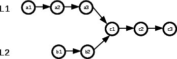
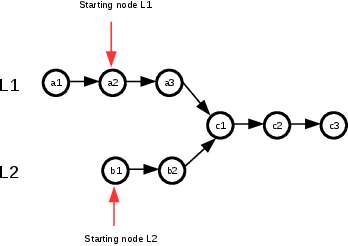

We consider a linked list where each node has the following data structure:
struct ListNode
{
int val;
ListNode *next;
ListNode(int x) : val(x), next(NULL){}
};
We consider two linked lists L1 and L2. The goal is to determine if there is an intersection
between L1 and L2. The following figure represents an example of intersection of two
linked lists.

Indeed, in this figure, both lists share the same nodes from c1 to c3.
Given the following prototype of the function:
ListNode* getIntersectionNode(ListNode *headA, ListNode *headB)
the objective is to propose an algorithm with a time complexity of O(n) and a memory
complexity of O(1).
Let see the first solution that comes into mind without taking care about the requirements. An easy solution would be for each node of a list to explore all the nodes of the other list and test if they are equal:
ListNode* getIntersectionNode(ListNode *headA, ListNode *headB)
{
if(headA == NULL || headB == NULL)
return NULL;
for(ListNode * tempA = headA; tempA != NULL; tempA = tempA->next)
{
for(ListNode * tempB = headB; tempB != NULL; tempB = tempB->next)
{
if(tempA == tempB)
return tempA;
}
}
return NULL;
}
This solution is O(1) memory complexity but the time complexity in the worst and average case is O(n*m) if n is the
size of the first list and m the size of the second list. The proposed solution does not fit the requirement so we will
need to optimize it.
I repeat here what is important is not to code the solution but how we find the solution.
The requirement is that the time complexity has to be in linear time and the memory complexity has to be constant.
So the solution is more or less similar to an algorithm that finds the intersection in one scan of the nodes of one
of the list.
The first idea that comes into mind is to start with two pointers targeting the first nodes of both lists and
then comparing side-by-side the nodes scanning in parallel both lists. You will tell me that is not so clever
because if the lists have different size (and it is the general case) it will not work. I completely agree but
it is the starting point of the good solution !
Indeed, if I find the starting nodes for both lists where I am sure that the number of the remaining nodes to scan
is the same then I can do the solution I just described before. The following figure will help you to understand.

If we start with a2 from L1 and b1 from L2 then we just have to scan the remaining nodes of both lists in parallel until
both nodes are equal. For example in the figure above, we will first compare a2 and b1, a3 and b2 and c3 and c3. We stop and we return
c3.
How to determine the starting nodes ?
I think by looking at the figure, you guess how to do it right ? Indeed if we know the size of both lists and then compare
these sizes we know where to start.
ListNode *getIntersectionNode(ListNode *headA, ListNode *headB) {
if(headA == NULL || headB == NULL)
return NULL;
int countA = 0, countB = 0;
ListNode * tempA = headA;
ListNode * tempB = headB;
for(; tempA != NULL; tempA = tempA->next)
countA++;
for(; tempB != NULL; tempB = tempB->next)
countB++;
tempA = headA;
tempB = headB;
if(countA != countB)
{
if(countA > countB)
{
for(int i=0; inext;
}
else
{
for(int i=0; inext;
}
}
while(tempA != NULL && tempB !=NULL)
{
if(tempA == tempB)
return tempA;
tempA = tempA->next;
tempB = tempB->next;
}
return NULL;
}